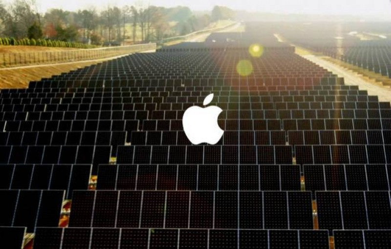

Aneel aprova aumento médio entre 10% e 30% do valor da energia elétrica de concessionárias de São Paulo, Paraná e mais 4 estados
NO PARANÁ
Terão contas reajustadas os consumidores que são atendidos pela concessionária Força e Luz Coronel Vivida Ltda. – Forcel, com aumento médio de 29,86%. Alta de 20,51% para consumidores residenciais; 20,64% para baixa tensão e 43,78% para alta tensão.
Segundo a Aneel, impactaram no aumento de fatores relacionados ao fato de a empresa ter deixado de ser suprida pela Copel Distribuição. “Isso fez com que, entre 2017 e 2018, ela tivesse de arcar com custos relativos ao rateio das cotas de Itaipu – cuja energia é precificada em dólar – e ao risco hidrológico”, disse a agência.
EM SÃO PAULOA ANEEL aprovou também o aumento na conta de luz, com efeito médio de 24,42%, para os consumidores atendidos pela empresa Elektro Eletricidade e Serviços S/A - Elektro. Para os consumidores residenciais, o aumento será de 23,12%; 23,20% para baixa tensão e 26,75% para alta-tensão.
Segundo a ANEEL, o que mais influenciou no reajuste da Elektro foram os chamados componentes financeiros principalmente relacionados à aquisição de energia e ao risco hidrológico.
Quer fugir do constante aumento das tarifas impostas pelas concessionárias? Invista em energia solar!
O payback é de 4,5 a 6 anos, depende basicamente da irradiação solar da região e da linha de financiamento utilizada.
Limpa, renovável e infinita.
Durabilidade média dos sistemas 25 a 30 anos, com módulos com garantia de fábrica de 20 anos com eficiência de 80%.
Raramente necessita de manutenção, sendo necessário apenas uma limpeza uma vez ao ano, com um pano úmido.
Seguro e com rendimento maior do que o tesouro direto após o payback (vou fazer uma tabela do excel com essa simulação para por nas nossas futuras proposta comerciais).
APPLE, GOOGLE E AS FONTES RENOVÁVEIS DE ENERGIA
Para 2018, a Google anunciou que utilizará
fontes renováveis de energia em 100% da de suas operações...
Para 2018, a Google anunciou que utilizará fontes renováveis de energia em 100% da de suas operações (energia eólica e solar). Segundo anúncio, a empresa é responsável pela geração de mais de 2,6 GW (gigawatts) de energia no mundo todo.
Cada gigawatt de energia é suficiente para abastecer uma cidade com 1,5 milhão de habitantes, segundo a Associação Brasileira de Energia Eólica.
Um dos principais motivos do investimento é o corte nos gastos. Com as fontes renováveis a Google consegue economias de 60% a 80%.
A Apple, por sua vez, não ficou atrás neste quesito. Em abril deste ano a empresa também anunciou que atua com 100% de energia de fontes renováveis no mundo todo. A empresa anunciou ainda que nove outros parceiros de fabricação se comprometeram a usar 100% de energia limpa em todas as suas operações ligadas com a produção da Apple.
Atualmente, a Apple conta com 25 projetos de energia renovável em todo o mundo, totalizando 26 megawatts de capacidade de geração de energia.
Empresas deste porte realizando grandes investimentos como estes só nos mostra que a era das fontes renováveis de energia já chegou, conseguindo economias e deixando um ambiente mais sustentável para futuras gerações.
Se você também quer fazer como o Google, Apple e outras grandes empresas, reduzindo as emissões de gases desfavoráveis ao meio ambiente e ao mesmo tempo economizando nas suas contas de luz, invista em energia solar fotovoltaica!
A meu ver aqui que entra o maior problema de todo negocio, dinheiro hoje em dia não está fácil pra ninguém, quando o cliente consegue economizar 1.000 reais em um sistema de 40.000 isso as vezes passa a ser um fator de escolha para ele. Acho que no começo a ideia seria ganhar alguns clientes no preço, mas é uma ideia que não se sustenta a longo prazo, com o passar do tempo temos que agregar valor aos nosso serviços e mostrar nossos diferencias competitivos que vão girar em torno da qualidade e do pós venda e não só do preço. Aqui cabe também uma pesquisa de mercado que podemos sentar e fazer juntos, analisando os pontos fortes e fracos de todos os nosso concorrentes. Conversei com meu antigo chefe esses dias e uma coisa que ele me disse que tem sido de extrema importância ao fechar os negócios é que temos que estar com as linhas de financiamento na mão, geralmente o cliente já aderiu a ideia de que é um bom negocio ter um sistema fotovoltaico, mas ao esbarrar em uma mínima burocracia com um banco ele desiste por já ter passado por experiências ruins com financiamento e tal. Ele me disse também que antes de usar as linhas de financiamentos já conhecidas ele tenta direto com o gerente do banco do cliente e quando não consegue vai atrás do Santander, sicred, bb, bndes etc... Sobre o valor em si, realmente é muito alto e temos que passar a ideia que isso é um excelente, se não o melhor e mais rentável, investimento de longo prazo do momento. O mercado tende a melhorar esse cenário, BNDES lançou uma linha de financiamento pra pessoa física de 4,03% ao ano para financiamento de sistemas fotovoltaicos com entrada de 20% do valor. Ainda existem vários problemas nessa linha que posso te explicar com mais calma depois, mas enfim, o governo tem visto como algo positivo o desenvolvimento fotovoltaico e tem feito politicas publicas para incentivar esse avanço.
A taxa mínima funciona assim: O preço do kwh no Paraná gira em torno de R$ 0,74. Clientes bifásicos são obrigados a pagar 50kwh/mês e trifásicos 100kwh/mês independente da sua produção fotovoltaica, Assim o mínimo para bifásico fica em R$ 37,00 e R$ 74,00 para trifásico. Em Prudente um cliente trifasico que tem um excedente de produção maior que 100kwh/mês ao invés de deixar como créditos para ser consumido em outro mês conseguiu negociar com a concessionária e fazer sua conta vir em R$ 00,00 nesse caso ele não paga mais nada, muito menos perde tempo indo efetuar algum tipo de pagamento, como ele conseguiu fazer isso (essa negociação com a concessionaria) ainda não sei muito bem, é o único caso que conheço até agora.
Realmente pode comprometer a estética, já tive problemas com clientes quando fui instalar o sistema no telhado com face norte (onde há o aproveitamento ideial de irradiação) e dessa maneira o sistema ficava a mostra na frente da casa. São detalhes que tem que ficar bem claros antes de fechar o contrato. No caso que citei anteriormente, meu antigo chefe não havia explicado para a cliente mas eu consegui convence-lo na dia da instalação. Estão saindo algumas novas tecnologias como telhas fotovoltaicas, mas ainda não estão chegando em um preço viável. Acredito que esse seria também um ponto que vale uma reflexão apesar de não ter sido um fator decisivo na adesão de um sistema fotovoltaico.
Sobre os longos períodos de chuva não é algo para se preocupar, pois quando projetamos um sistema pegamos como base a irradiação media anual do local. É uma variável que tem como ser medida e compensada, por exemplo, no inverno os níveis de irradiação chegam a ser ¼ menores que no verão, mas na elaboração do projeto já é feita essa analise e esse déficit na produção é compensado nos outros meses. Os créditos gerados em um determinado mês podem ficar acumulados por até 60 meses podendo ser consumidos nesses períodos de baixa produção. Vale lembrar também que em dias chuvosos o sistema produz energia, já que a produção depende da irradiação solar (qualquer luz disponível por mínima que seja gera eletricidade) e não do calor, claro que em níveis menores mas há produção.
CALIFÓRNIA TORNA OBRIGATÓRIO O USO DE ENERGIA SOLAR EM NOVAS RESIDÊNCIAS
Em maio de 2018 o estado da Califórnia se tornou o primeiro dos EUA a exigir painéis solares em quase todas as novas residências. A maioria das novas unidades construídas após 1º de janeiro de 2020 serão obrigadas a incluir sistemas solares como parte dos padrões adotados pela Comissão de Energia da Califórnia.
O estado já é conhecido por seu protagonismo tecnológico e capacidade de promover inovação em diferentes setores da economia, ao tomar uma decisão desse porte, dá um gigantesco passo para popularizar as fontes de energia limpa e renovável, tendo repercussão direta no resto do planeta.
Pelas regras impostas pelo Estado, as placas solares podem abastecer cada unidade separadamente ou uma única instalação abastecendo várias construções ao mesmo tempo.
NO BRASILEmbora não haja alguma exigência parecida em nível residencial, há um projeto de lei aprovado em março deste ano estabelece que os prédios públicos em construção, alugados ou em reforma, e de uso da União, deverão instalar sistemas de captação de energia solar e também de armazenamento e utilização de águas pluviais. Estamos falando do projeto de lei n°317, de 2015, o qual tramita atualmente na Comissão de Meio Ambiente (CMA), onde terá votação final.
Há, ainda, a portaria (nº 643/2017) do Ministério das Cidades que prevê a instalação de energia solar nos imóveis do programa Minha Casa, Minha Vida e que passou a vigorar em 1º de janeiro deste ano. O documento estabelece os requisitos para admissão de propostas por meio de “Sistema de Aquecimento Solar” e do “Sistema Solar Fotovoltaico”.
Pra falar a verdade Gui, ainda não pesquisei nada a respeito de importação de material, se não me engano, certa vez um fornecedor me mandou um preço de um container fechado e falou que eram 300 módulos, realmente chegava em um preço bem acessível acredito que é algo que temos que sentar e analisar, provavelmente ainda não está tão viável porque não vejo nem uma empresa de pequeno e médio porte importando ainda.
COMO FUNCIONA UM PAINEL SOLAR?
As placas fotovoltaicas conseguem suprir todo o consumo
elétrico de uma casa ou empresa por meio da conversão direta da luz do sol em energia elétrica,
sendo uma opção altamente vantajosa para fugir das altas contas de luz...
As placas fotovoltaicas conseguem suprir todo o consumo elétrico de uma casa ou empresa por meio da conversão direta da luz do sol em energia elétrica, sendo uma opção altamente vantajosa para fugir das altas contas de luz e possuem diferentes tipos, formatos e preços para aquisição e instalação.
Mas como funcionam essas placas?
Em sistemas solares fotovoltaicos conectados à rede (On-Grid), as placas fotovoltaicas são um dos mais importantes equipamentos, tecnologia que já permitiu a milhares de brasileiros gerarem sua energia.
Cada uma destas placas produz determinada quantidade de energia e, então, são conectadas juntas até alcançarem a quantidade necessária para alimentar o imóvel, formando o que chamamos de painel solar fotovoltaico.
Dentro do sistema, a função das placas é converter a luz solar em energia elétrica, o que é decorrente das células fotovoltaicas da qual são compostas.
Por que utilizar placas fotovoltaicas?
A principal razão para se optar pela instalação do sistema solar fotovoltaico como um todo, é a economia obtida na conta de luz.
Através das regras de geração distribuída criadas pelas Aneel, o consumidor que instala o sistema em sua casa ou empresa pode conectá-lo a rede elétrica local e passar a fazer parte do sistema de compensação de energia elétrica (créditos energéticos).
Assim, os clientes podem instalar um sistema que consiga gerar toda a energia consumida no mês e, dessa forma, deixar de pagar por esta a distribuidora, conseguindo uma redução na conta de luz de até 95%.
Outras vantagens do uso das placas fotovoltaicas como opção energética são os incentivos dados pelo governo para quem gera a energia, como isenção do PIS e CONFIS (nível federal) e ICMS (estadual) sobre a energia gerada.
As garantias de fábrica dos fornecedores tem sido muito parecidas, giram em torno de 20 anos para os módulos onde garantem que nesses 20 anos os módulos terão no mínimo 80% de eficiência. Já os inversores a garantia varia um pouco, geralmente estão em uma faixa de 5 a 10 anos, o resto é cabo, conector e estrutura de fixação que são materiais relativamente baratos.Agora cumprir tudo isso é outra coisa. Sei que um fornecedor que tem um preço um pouco mais caro que se chama “Renovigi” é bem comprometido com o pós venda. Tem um outro fornecedor que se chama “Aldo” que tem excelentes preços mas já tive problemas com eles, uma vez na prudente solar um modulo deles chegou quebrado logo que abrimos a caixa na transportadora e pra trocar tivemos que pagar o frete, que não foi barato, além disse transferiram toda a responsabilidade para a fábrica sem nem um tipo de ajuda na intermediação. Acredito que tudo isso teremos que sentar e pensar de forma bem analítica, talvez no início seja interessante usar um determinado fornecedor e quando a empresa estiver bem estruturada pensar mudar ou até mesmo importar nosso próprio material como você apontou.
CARROS ELÉTRICOS E A ENERGIA SOLAR
Os números de vendas de carros elétricos e híbridos podem parecer pouco expressivos, se comparados ao total de quase 45 milhões de veículos que circulam no país. Entretanto, de 2016 para 2017, suas vendas cresceram 202%. Logo, o desempenho é expressivo, tendo em vista que as vendas internas totais de veículos novos aumentaram apenas 9,2%. Percebe-se que o consumidor aposta na mobilidade e que os governos ofereçam incentivos à altura, dentro de alguns anos.
Além de não emitir gases decorrentes da queima dos combustíveis, os automóveis movidos por eletricidade apresentam vantagens econômicas a longo prazo: um litro de gasolina em um veículo comum tem o mesmo rendimento de um kWh (quilowatt-hora), que custa cerca de R$ 0,30 de carga elétrica.
Um fator que dificulta o usuário que deseja usufruir destas novas tecnologias são as altíssimas tributações. Atualmente, o Imposto sobre Produtos Industrializados (IPI) é de 25% para veículos totalmente elétricos, 13% para híbridos e somente 7% para carros flex, que apresentam eficiência energética menor.
A ENERGIA SOLAR E OS CARROS ELÉTRICOSLevando em consideração, de um lado, a constante variação dos preços dos combustíveis e o seu alto custo ambiental, por outro lado, tanto os painéis solares como baterias para a armazenagem vêm caindo muito de preço. Isso gera um ciclo virtuoso, onde os ganhos de escala proporcionados pelo incremento nas vendas gera ainda mais demanda por estes produtos. Por isso essa revolução chegará até nós antes do que muitos imaginam.
Os sistemas de geração de energia solar fotovoltaica são uma parte essencial desta revolução. Imagine seu carro elétrico sendo carregando durante o dia, com energia limpa (estacionamentos cobertos com painéis fotovoltaicos, por exemplo). O ciclo se fecha com a produção de sua própria energia, a partir do sol.
Sim é possível fazer o monitoramento de toda a produção do sistema. Todos os inversores vem com um sistema de wifi embutido e enviam dados de 30 em 30min para o um sistema online onde é possível acompanhar a produção diária, semanal, mensal ou anual de qualquer lugar que se tenha acesso a internet. Quando terminamos a instalação já instalamos o aplicativo no celular do cliente e ele pode acompanhar ou pelo app ou pelo site sua produção. Nos que instalamos também temos como observar a produção é só pedir para o cliente não mudar a senha, dessa forma podemos prever falhas no sistema antes que a conta de luz chegue caso o sistema tenha algum problema.
ENERGIA SOLAR: RETORNO DO INVESTIMENTO
Sabe-se que ainda há um receito quando o assunto é investir em energia solar, muitas pessoas ainda pensam que o custo-benefício de se investir em um sistema fotovoltaico não compensa. Sendo assim, apresentamos a seguir alguns dados para que você possa tirar suas próprias conclusões sobre os benefícios econômicos que terá, e de forma limpa e sustentável, ao investir em energia solar.
TEMPO DE RETORNOPara calcular o tempo de retorno do investimento (Payback) é preciso levar em conta diversos fatores como: o tamanho do sistema de energia solar a ser instalado, ou seja, a sua capacidade de geração energética; o valor da tarifa de energia local; a previsibilidade do aumento desta fatura de energia; o consumo energético da empresa/imóvel; impostos cobrados pela energia solar gerada e outros.
Levanto em consideração tais fatores, o tempo de retorno médio do investimento costuma ser de 5 anos. Ou seja, com a durabilidade média do equipamento sendo de 30 anos, são pelo menos 25 anos de economia na conta de energia!
Outro fator a se considerar, é de que as placas solares valorizam o imóvel. Os painéis solares são investimentos considerados uma melhoria para casa, isso reflete diretamente no valor do imóvel no mercado. Gerar energia em casa agrega um maior destaque no setor imobiliário. De acordo com uma pesquisa realizada pelo Laboratório Nacional Lawrence Berkeley nos EUA, painéis fotovoltaicos valorizam o imóvel de 3% a 6%. O estudo também mostrou que os compradores estavam dispostos a pagar, em média U$ 15.000,00 a mais por casas que possuíssem um sistema fotovoltaico instalado.
Portanto, a instalação de um sistema de energia solar é um investimento pois à medida que gera descontos na conta de energia, os custos com a instalação do sistema podem ser pagos com o passar do tempo. Com a evolução tecnológica e incentivos governamentais, este tempo de payback fica cada vez menor, pois o sistema barateia e diminuem-se os impostos pela geração de energia solar.
Para não se perder eficiência, anualmente é necessário se fazer a limpeza das placas, claro que se o sistema está instalado perto de algum lugar que produz muita poeira ou há muitos bombos defecando essa limpeza pode ser feita com um menor tempo. Anualmente apertar os parafusos das caixas de proteção como disjuntores pois todo lugar onde passa corrente elétrica existem movimentos que fazem os cabos vibrarem e consequentemente afrouxam os parafusos podendo afetar o trafego de corrente que ali existe. Essas são questões que podem até virarem diferenciais competitivos para a nossa empresa, pois poucas empresas fazem um pós venda caprichado e que visam a alta produtividade dos clientes a longo prazo. Os outros fatores de perda de eficiência vem basicamente de erros de projeto ou instalação, por exemplo, não deixar os módulos muito próximos ao telhado quando o mesmo for de material metálico, pois há superaquecimento dos módulos. Certificar-se que não haverá sombra em nem um dos módulos já que os mesmo estão ligados em serie e se um pega sombra todos são afetados, lembrar que o movimento do sol muda no inverno e isso pode gerar uma sombra que não havia em determinado lugar. Escolher bem o local de instalação do inversor, sendo um lugar arejado e longe de chuva. Não deixar fios enrolados ou com sobras, soldar as emendas entre outros detalhes
MERCADO PARA ENERGIA SOLAR EM 2018
Em algumas partes do mundo, a energia solar já é mais barata que o carvão. Em menos de uma década, é provável que seja a opção de menor custo em quase todos os lugares.
Cada vez mais países e grandes empresas investem pesado em energias de fontes renováveis, evidenciando que este é o melhor caminho visando uma maior economia e um meio ambiente sustentável para futuras gerações.
Com tudo isso, as oportunidades para quem quer investir no mercado de energia solar até o próximo ano são muitas. Vamos analisar alguns dados sobre o mercado para energia solar nos próximos anos.
A primeira questão que deve ser respondida por todos que desejam ingressar neste mercado é respondera pergunta: Por que investir em tecnologia verde? Entender a história deste setor e o porquê esta é uma área em constante crescimento é essencial para o sucesso na área. Alguns aspectos a serem levados em consideração são:
E por que o mercado de Energia Solar é promissor?
Pois está absorvendo muitos profissionais: De acordo com a Associação Brasileira de Energia Solar Fotovoltaica (ABSOLAR), a instalação de projetos de energia solar resultará em um volume expressivo de novas oportunidades de trabalho. É previsto um aumento de 3,3 GW na produção de energia solar em 2018, incluindo novas usinas solares que serão instaladas pelo governo e a microgeração de energia.
Fazendo as contas, seria algo em torno de 60 mil e 99 mil novas oportunidades de emprego no mercado de energia solar. Isso mostra a alta expectativa de crescimento do setor para o próximo ano.
Outra questão é a de que não há previsão para redução das tarifas no consumo de energia elétrica, o que faz com que muitas empresas e consumidores procurem pela alternativa da energia solar fotovoltaica, visando fugir dos constantes aumentos na conta de energia e geração de economia a longo prazo.
Empresas como Google e Apple já anunciaram que seu funcionamento ocorre 100% com uso de energia provinda de fontes sustentáveis, o que gera um exemplo a ser seguido por empresas do mundo todo. Isenção de impostos o incentivo do governo também deixarão o mercado bastante ativo nos próximos anos.
Apenas no Paraná e Santa Catarina existe a cobrança de ICMS sobre o excedente produzido referente ao sistema fotovoltaico. Acredito que muito em breve esse imposto irá cair; aqui no Paraná já está em tramite provavelmente até o fim do ano não existirá mais, e isso melhora o cenário para nós. Sobre como é feita essa cobrança, funciona da seguinte maneira: Vamos supor que eu tenho um sistema na minha residência e durante a tarde eu produzo 10kwh. Desses 10kwh eu estou consumindo 5kwh instantaneamente pois estou com geladeira, ar-condicionado entre outros equipamentos ligados. Logo 5 kwh estão sendo computados como créditos, desses 5kwh que viraram créditos eu tenho que pagar o ICMS que gira em torno de 30%. Isso significa que no Paraná além do mínimo eu tenho que pagar um pouco a mais referente ao imposto de parte da minha produção. Atrapalha a viabilidade e aumenta o payback,por exemplo aqui em SP o payback gira em torno de 4,5 a 5 anos no Paraná vai girar em torno de 5 a 6 anos. Nesse momento que temos que ter muito capricho e habilidade mostrando os gráficos de retorno de investimento e o quanto o sistema é rentável a longo prazo, mesmo com o imposto embutido.
PARANÁ ISENTA COBRANÇA DE ICMS POR ENERGIA SOLAR
Com a adesão do estado ao Convênio 16/15 do Conselho Nacional de Política Fazendária (CONFAZ), está isenta a cobrança do Imposto Sobre Circulação de Mercadorias e Serviços (ICMS) sobre a energia solar no Paraná. A medida é para unidades que geram até 1 MW de potência instalada, sendo que a tributação era de 29% sobre os créditos de energia gerados.
Ao todo, no Brasil, 24 estados + o Distrito Federal possuem isenção de ICMS para energia solar, mediante as diretrizes do Convênio ICMS 16/2015, de autoria do Conselho Nacional de Política Fazendária (Confaz).
Todavia, no Paraná, o prazo do benefício é de 48 meses (quatro anos), o que gerou certa frustração por parte de especialistas.
COMO FUNCIONA?No sistema, a energia gerada e não consumida pelo gerador é injetada na rede da distribuidora sendo oferecida como um “empréstimo gratuito”. Para o consumidor, esta é devolvida na forma de “créditos energéticos”.
Durante a noite, quando o sistema não está em funcionamento, a energia necessária provém da rede elétrica da distribuidora.
Ao final do mês, será calculado o balanço do saldo entre a Energia consumida e Energia injetada, com cada crédito energético gerado por 1 Watt injetado, compensando 1 Watt de energia consumida da rede. E é exatamente sobre essa energia injetada na rede pelo consumidor, e que volta a ele como créditos, que a isenção do ICMS pelo convênio ocorre.
Desta forma, Nos termos do Convênio ICMS 42/2018 o Paraná fica autorizado “a conceder isenção do ICMS incidente sobre a energia elétrica fornecida pela distribuidora à unidade consumidora, na quantidade correspondente à soma da energia elétrica injetada na rede de distribuição pela mesma unidade consumidora com os créditos de energia ativa originados na própria unidade consumidora no mesmo mês, em meses anteriores ou em outra unidade consumidora do mesmo titular”.
TELHA SOLAR TESLA
A TESLA, empresa americana que atua no ramo automotivo e de armazenamento de energia, anunciou que já começou a receber os primeiros pedidos para seu telhado solar, o Solar Roof.
Diferentemente das instalações fotovoltaicas comuns, usadas em algumas casas para captar energia solar de maneira convencional, o Solar Roof possui um design que se mistura ao da residência, como uma telha tradicional de barro ou ardósia, isso porque, diferentemente do que acontece atualmente, elas não serão aplicadas sobre a cobertura, sendo que a própria telha será capaz de gerar energia.
O novo telhado solar também representa um passo na direção do futuro idealizado por Elon Musk( CEO da TESLA): sustentável e com a presença da Tesla onde for possível. O carro elétrico, por exemplo, é carregado pelas tomadas da casa, que tiram sua energia do telhado solar. As telhas, por sua vez, mandam o excesso de energia gerada durante o dia para ser armazenada em uma grande bateria doméstica. Cada uma dessas etapas é um produto da Tesla: além do telhado, a empresa está para lançar sua terceira geração de carros elétricos e já lançou uma nova versão da Energy Powerwall, conhecida como a bateria doméstica.
Feitas com vidro temperado e texturizado, elas são três vezes mais fortes do que as telhas padrão, sendo ultrarresistentes ao choque e contra granizo, vento, e incêndios e, por essa razão, considera-se que estas têm “garantia infinita”.
USINAS SOLARES
Atualmente, um dos principais meios de geração de energia alternativa se dá por meio de usinas solares. Estas têm ganhado espaço no Brasil, gerando energia para diversas residências e empresas. Confira como ocorre seu funcionamento e como está o desenvolvimento em nosso país.
São consideradas Usinas Solares: sistemas fotovoltaicos de grande porte, projetados para a produção e comercialização de energia elétrica. Toda produção de energia ocorre através de painéis fotovoltaicos, transformando a energia solar em energia elétrica.
A grande diferença de uma Usina Solar para os sistemas de energia solar fotovoltaica instalados em residências e empresas é sua finalidade. As usinas produzem energia para distribuição através de uma rede, que posteriormente é vendida. Já os sistemas convencionais priorizam o consumo próprio.
As Usinas Solares utilizam milhares de placas fotovoltaicas para gerar energia. Também utilizam um dispositivo chamado de “tracker”, que direciona a placa de acordo com a posição do sol, elevando ainda mais o potencial energético da luz solar.
A geração de energia solar beneficia a população e o meio ambiente de diversas maneiras, como por exemplo: custo mais baixo para utilização da energia elétrica e diminuição do lançamento de gases poluentes na atmosfera.
NO BRASILDesde o início de 2017, diversas empresas iniciaram projetos de geração de energia solar no país. Embora ainda muito desconhecidos pela população em geral, diversos parques já apresentam Usinas Solares instaladas em seu território. Alguns exemplos:
Parque Solar nova Olinda (PI);Maior Usina Solar do Brasil, capacidade de geração de 292 MW de energia.
Parque Solar Ituverava (BA);Tem capacidade de produzir 254 MW de energia.
Parque Solar de Bom Jesus da Lapa (BA);Tem capacidade de produzir 158 MW de energia.
Parque Solar Horizonte (BA);Tem capacidade de produzir 130 MW de energia.
Parque Solar de Pirapora (MG);Ao ser finalizado, o projeto terá capacidade para produzir 400 MW de energia.
Sim, existem inúmeras linhas de financiamentos, Santander tem taxas de 1% ao mês (não precisa ser correntista) para até 36x. Pelo Sicredi é possível parcelar em até 60x com uma espécie de juros compostos, 0,4 fixo e a outra parte varia de 0,7 a 1,1 se não me engano, formando um juros que podem variar de 1.1% a 1.5% ao mês (mas tenho que confirmar essa informação do sicredi pois vi faz muito tempo). Tem uma linha do Banco do Brasil também, mas não lembro exatamente os juros cobrados e também ainda há a possibilidade de conversar com o gerente do banco do cliente e ver se ele libera o financiamento para o sistema mesmo sem ter essa linha especifica de financiamento. Tudo isso quando o escritório estiver aberto tem que estar na ponta da língua, pois como te disse é um fator crucial na decisão do cliente de comprar ou não o sistema.
Esse item é de extrema importância. Com o tempo tenha o habito de listar tudo (realmente TUDO) o que será necessário para uma instalação, ferramentas, fios, conectores, sua caixa de parafusos, as placas de sinalizações (acreditem as concessionárias deixam de aprovar projetos por isso, o que aborrece muito o cliente que pode não tem indicar para amigos e conhecidos) entre outros itens.
Instalação é sempre sinônimo de imprevisto. Chegar o mais cedo possível te dá uma margem de tempo para vários tipos de imprevistos, como problemas com seu veículo, problemas com suas ferramentas, falta de algum material, residências com problemas nas instalações elétricas que necessitam de manutenção, etc.
Tenha em mãos sempre um grande leque de ferramentas. Pare com a mania de olhar as coisas como gastos e passe a olhar como investimento. Ferramentas de qualidade e de vários tipos podem agilizar suas instalações e também evitam que você fique de cabeça quente em cima do telhado.
Sempre que for executar uma instalação em uma outra cidade a 200 km, 300 km tenha em mãos uma lista de fornecedores aos quais você pode pegar produtos a pronta entrega. Certa vez em uma instalação a 300 km da minha cidade, quando cheguei na casa do cliente, me deparei com uma estrutura diferente da qual eu havia solicitado, por sorte conhecia um fornecedor que pode me atender e me vender tudo o que eu precisava.
Entre no máximo de grupos de Facebook e WhatsApp que você puder. Certa vez configurando um inversor, perdi um código de acesso e como era um sábado de tarde não tinha acesso ao suporte técnico do fornecedor. Não pensei duas vezes, coloquei minha dúvida em um grupo do Facebook e em cerca de minutos os colegas de trabalho me ajudaram. Hoje em dia o mundo está abundante em conhecimento, e acredite as pessoas adoram compartilhar com os amigos de profissão os conhecimentos técnicos que elas já possuem. Sempre que puder ajude e, com certeza, será ajudado.
Essa é uma péssima mania de prestadores de serviços e empreiteiros que normalmente fazem as coisas com muita pressa. Geralmente esse tipo de profissional perde o foco pensando nos próximos trabalhos ou querendo sair cedo da instalação. Foco e excelência é essencial em uma instalação que deve durar 30 anos ou mais.
Certifique-se que os profissionais que estão na instalação possuem NR35 para trabalho em altura e estão com os EPI’s (equipamento de proteção individual) adequados e na validade (não se esqueça que esses produtos têm prazo de validade e selo do INMETRO).
O que vejo com muita frequência entre instaladores é a preguiça de pensar. Quando comecei a instalar, muitas vezes meus colegas de trabalho ficavam caçoando de mim, pois com frequência eu parava pra pensar 5 minutos... 10 minutos... na solução de determinado problema (que acreditava que iria me poupar muito tempo mais pra frente caso eu encontrasse uma solução inteligente). Atualmente temos que usar as tecnologias a nosso favor, não precisamos mais de pessoas com aquele perfil “bruto” para ser instalador e sim alguém que saiba usar os recursos disponíveis com inteligência.
<<<<<<< HEAD =======Sobre o trello, que comentei com você, deixo um vídeo do youtube de 13min, uma espécie de tutorial, quando você tiver um tempo assiste ai só pra ter uma ideia de como funciona, acho que é uma ferramenta que pode ajudar muito a nossa organização de tarefas principalmente agora no começo da empresa.